Moving a character from one variant to another
A variant change item moves a character from one variant to another. A common example is a Rarity Upgrade Ticket that moves a Common character to Uncommon. The community sells or awards one, the owner redeems it on a character they own, and the character is Uncommon from that moment.
It is an ordinary redeemable item whose type carries two extra settings: which variant it grants, and which characters it can be spent on. It can be traded, granted, sold in the shop, and it has a provenance page like any other item.
Holding one is the permission. Changing a character’s variant is otherwise a staff action: an owner who can edit their own character’s registry still cannot change its variant. Redeeming a variant change item is a separate route, available only while the item is in hand.
Set on the item type, not chosen at redemption
The change applies when the item is redeemed
The item ledger and the character’s rarity history
An MYO slot and an edit kit both open a trait review, and refusing one returns the item. A variant change item does neither. On confirmation the item is destroyed and the character is the new variant.
There is no queue to refuse it in and no automatic way to reverse it. Moving the character back means either another variant change item pointing the other way, or a staff variant change — see Changing a Character’s Rarity.
Copies already in members’ hands read the item type’s current settings at the moment they are redeemed, so editing a destination changes what every outstanding copy will do.
On an item type’s edit form, under Administration → Items, there is a Changes variant on use panel with two settings.
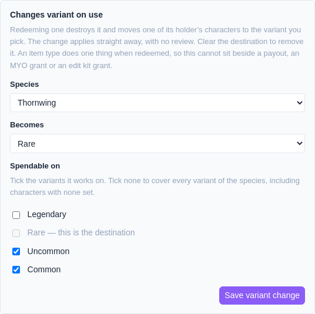
The species comes from the destination variant, and an item can only be spent within that species — a Pillowing cannot become a Lintling, since the two species have different trait lists.
Clear the destination to remove the setting.
Only a consumable item type can carry one. Redeeming is what uses the item up; without that, one item would move a character every time it was pressed.
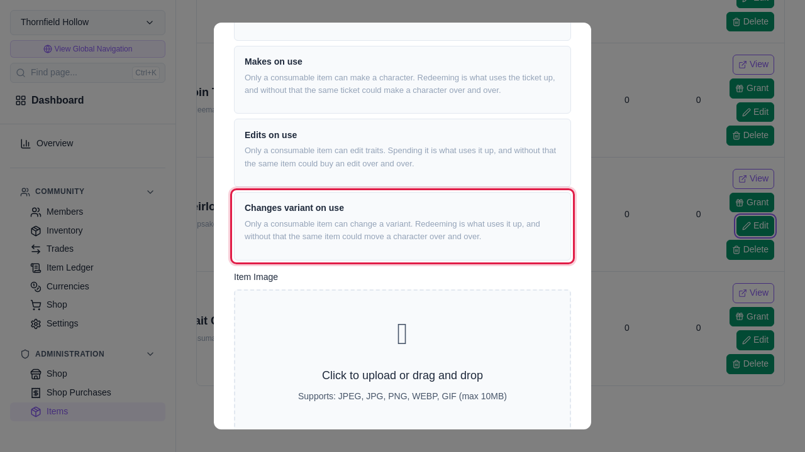
An item type does one thing when redeemed. A type that already pays out currency, makes characters, or edits traits cannot also change variants; clear the other setting first.
The item type’s page lists what the item can be spent on and what it grants. It is public, so it can be read by anyone considering a trade for one.
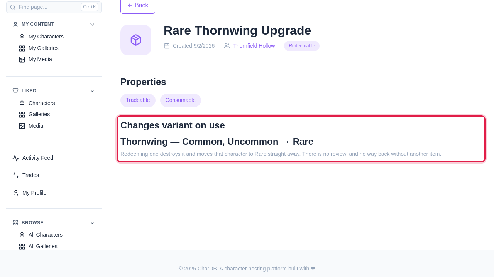
There are two routes, and both reach the same page.
From the character. A character you own shows an action naming the variant it would become, when you hold an item that would move it.
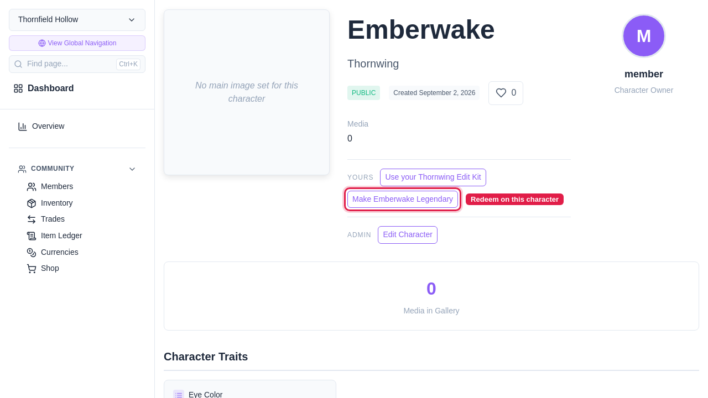
From the item. In the inventory, the item carries a Change a variant button, which opens a list of the characters it can move.
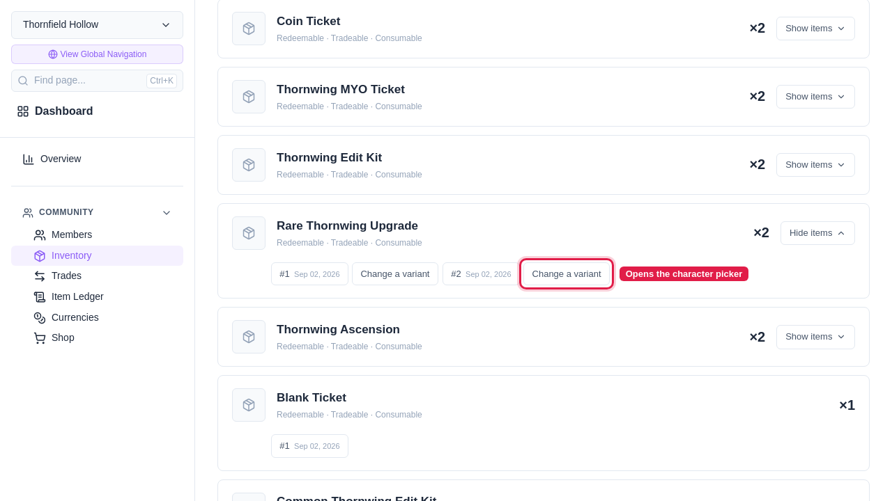
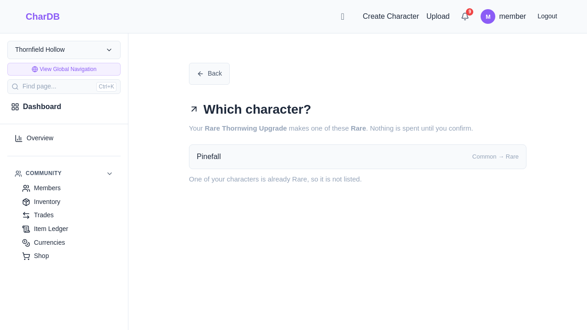
The page states the move rather than offering a choice of variant, since the destination comes from the item. Holding more than one item that would move the character gives a list of those items, each naming where it sends the character.
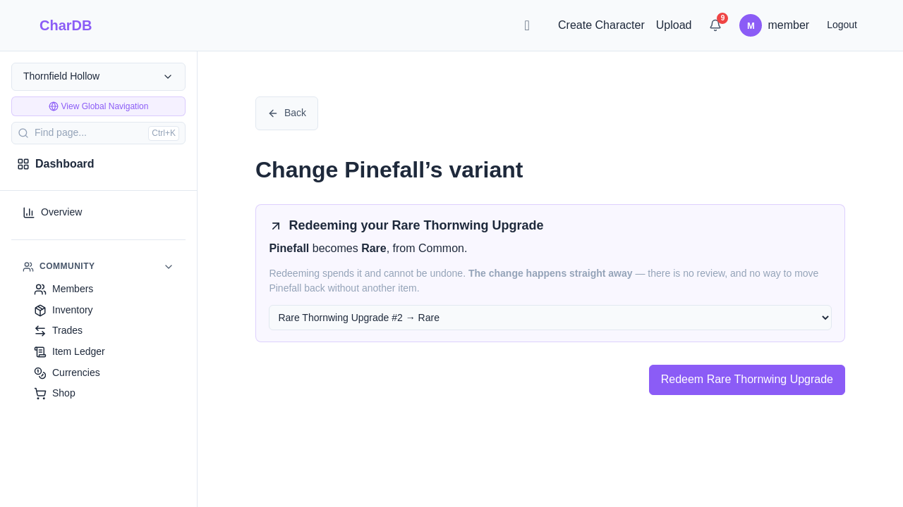
Each variant carries its own set of trait options. A character can therefore hold a value the variant it is moving to does not offer — a blue-eyed Common moving to a Legendary that offers amber only.
The page lists each of those values and asks what it should become: either an option the new variant carries, or nothing. The redeem button is disabled until all of them are resolved.
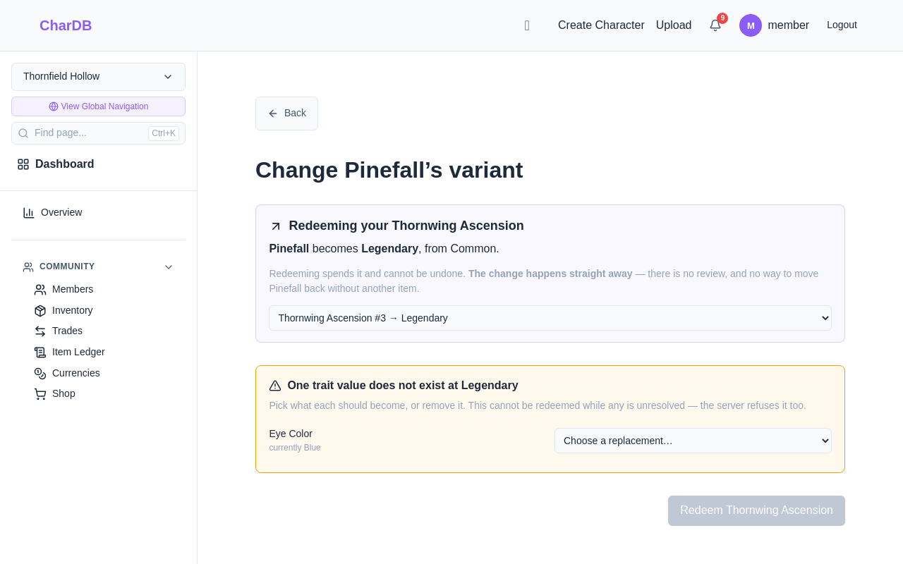
This panel appears only when the destination lacks an option the character currently has. Two variants offering the same options never produce it.
The dialog names the item, when it reached its holder, the character, and the variant it becomes.
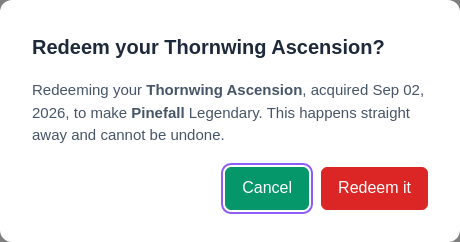
Cancelling leaves the item untouched. Confirming destroys the item and moves the character together, so submitting twice spends one item.
The character’s rarity history gains a line with the two variants, the date, who did it, and the item that was redeemed. It is on the character page and it is public. Staff variant changes appear in the same history.
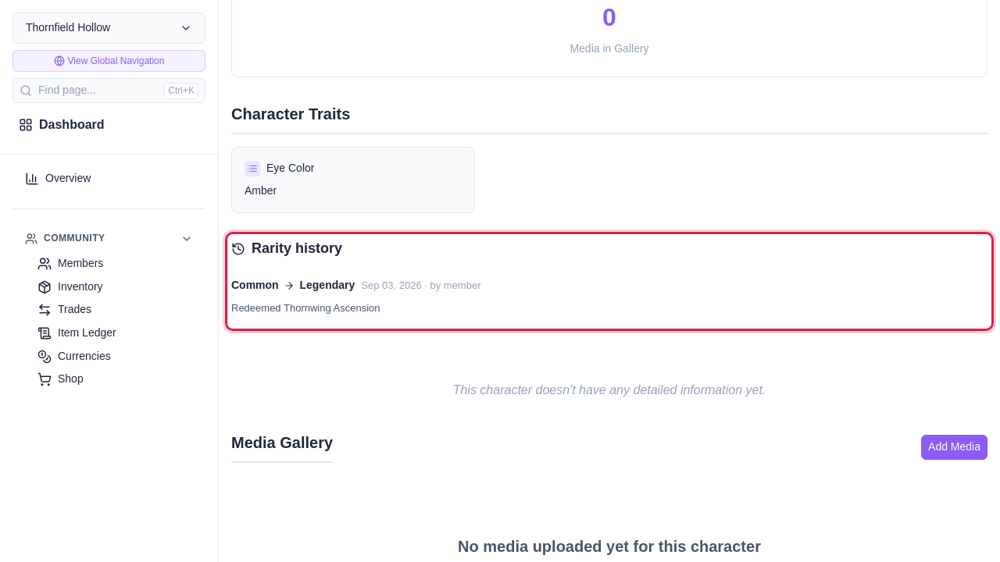
The community’s item ledger gains a Redeemed row naming the item, the member, and the reason. It can be filtered to Redeemed alongside every other kind of redemption.
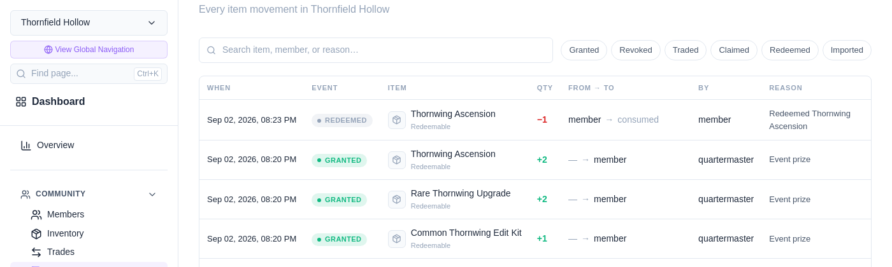
The item’s provenance page continues to work after it is redeemed; being destroyed is one more event in its history.
The item survives every one of these.
| Reason | Notes |
|---|---|
| The character is not yours | Redemption works on characters you own, not on ones offered in a trade. |
| The character is already that variant | Such characters are left out of the picker, so this is reachable mainly by following a stale link. |
| The item does not work on that variant | Checked against the item’s Spendable on list. An empty list works on all of them. |
| The item is for a different species | An item can only be spent within its destination variant’s species. |
| A trait value the new variant does not carry | Replace it or remove it first. See step 6. |
| The character has a change awaiting review | An edit kit’s proposal holds values chosen for the current variant. Resolve the review first. |
| The character has no species | A character removed from its species has no variants to move between. |
| The item type is not consumable | Redeeming is what uses it up. |
| You are no longer in the community | A species belongs to one community. |
| The item is not yours, or is already spent | Ownership is checked when the redemption is written, so a trade landing in between is caught. Submitting the same page twice spends one item. |